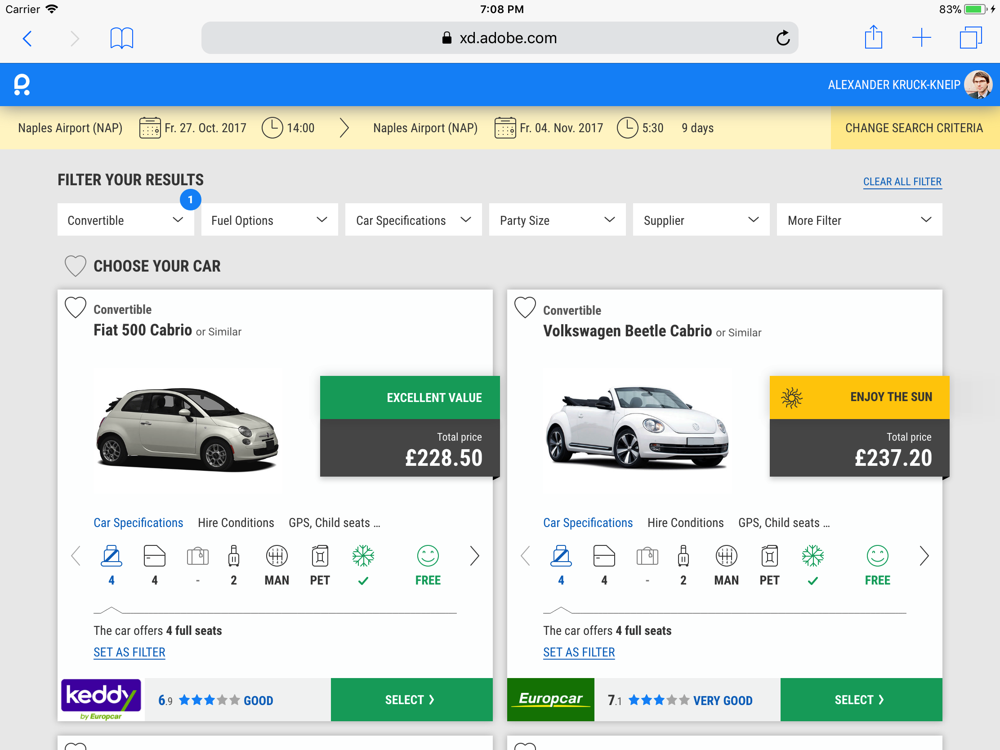
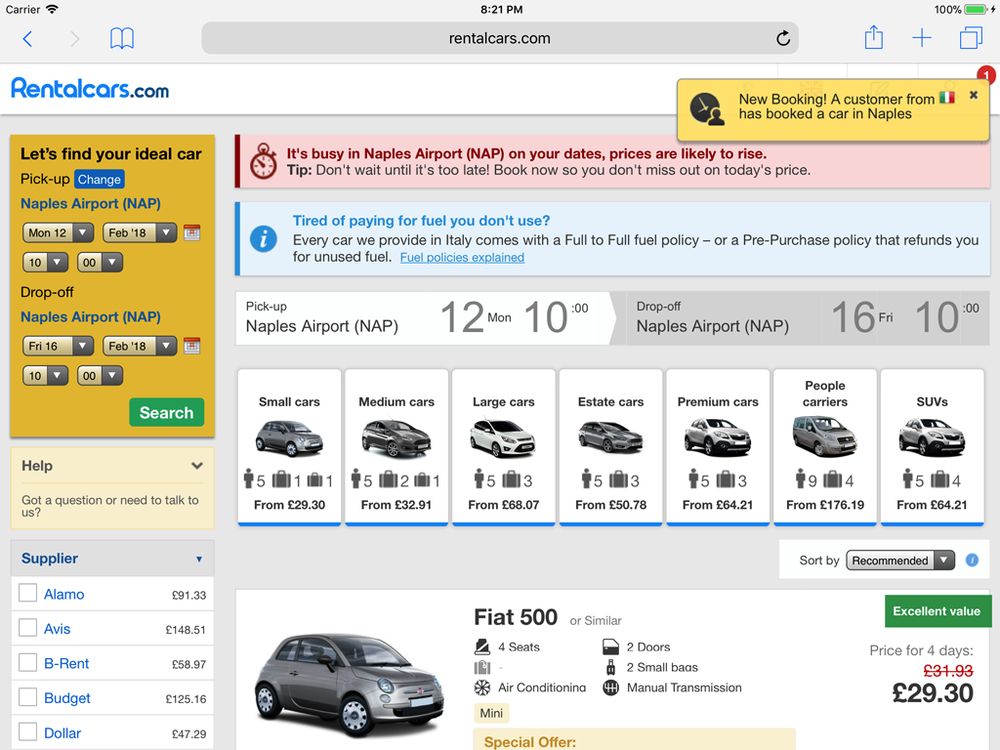
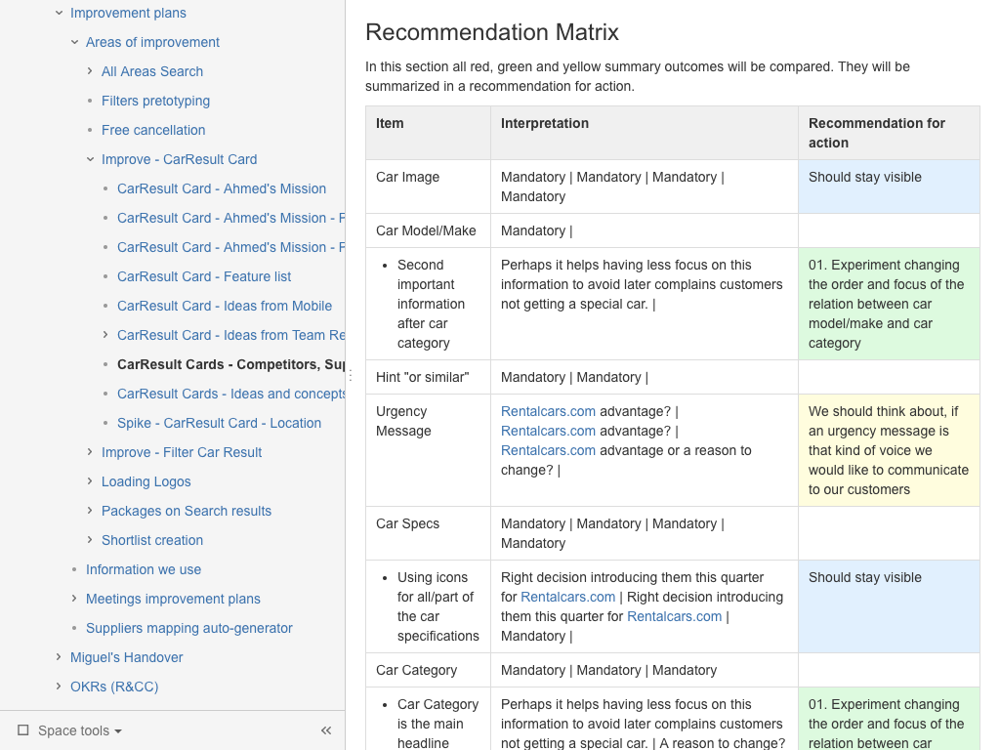
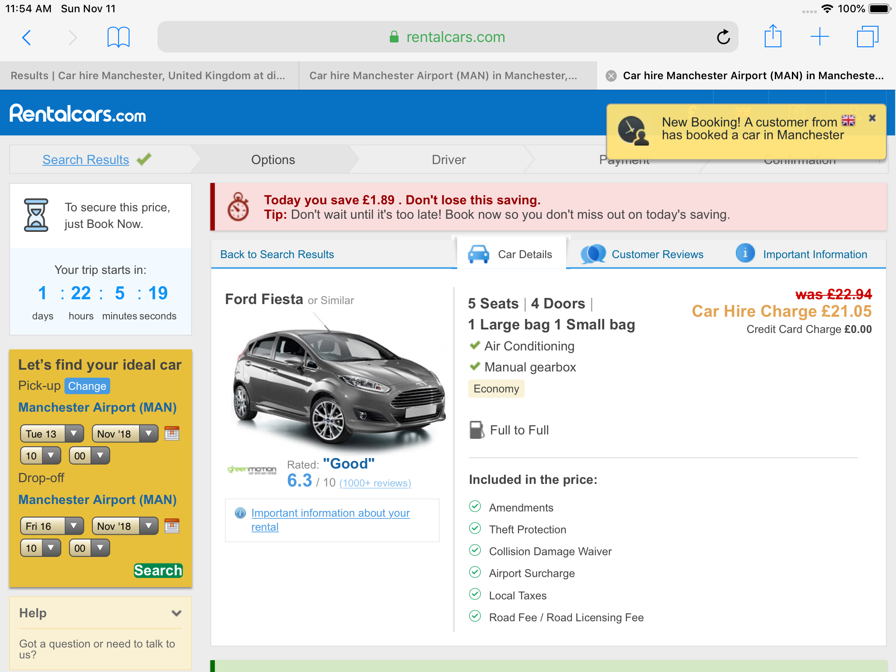
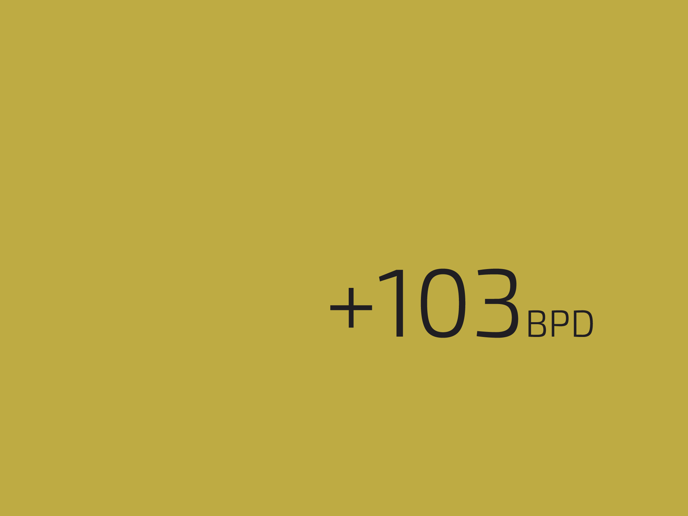

Vision
Conversion

The Challenge
UXR perspective
- Customers want to shortlist their results
- Customers would like to switch between grid view and list view
- Customers would like to calculate the extras in the result list
Dev perspective
- The car result card has a limited scalability
- The CSS/HTML was not responsive
Business perspective
- More BPD

Analysis Setup
- I choosed Atlassian Confluence for maximum transparency with the stakeholders
- I did a matrix check on 30 different features/elements, 10 direct competitors, 17 biggest suppliers and 8 world best eCommerce websites
- All together 1,050 intersections
- I created a Recommendation Matrix to highlight most important findings

Best Finding
- Open the offer details in a new tab for shortlisting!
- When I made the screenshot the feature was still implemented
